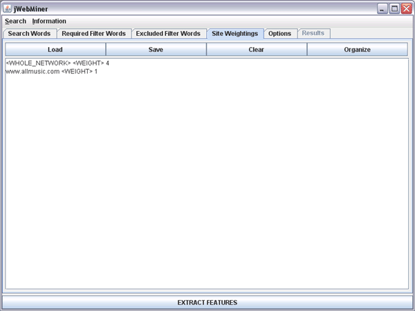

| Site Weightings Panel |
|---|
The Site Weightings Panel is a GUI panel allowing users to enter specific sites to search individually and separately from the whole available network (or as well as the whole available network, if desired). Relative weights can also be assigned to each site (and/or the whole network) to give certain sources more weight in final feature calculations than others.
Specifying specific sites with this panel is useful when there are certain sites that are known to be particularly good resources for the type of feature extraction to be performed. It can then be useful to emphasize them within or instead of the network as a whole, which might generate hits not relevant to the subject for which features are being extracted . For example, in the case of music queries, sites such as All Music, Pitchfork, freeDB, Billboard, Art of the Mix, A-Z Lyrics, etc. can be good sources. It can also be useful to emphasize general resource sites such as Wikipedia or Citizendium, as they can sometimes be less noisy than the network as a whole. Specifying relative site weightings can be useful when some sources are more trusted than others.
Specifying Source Sites
If the text area of the Site Weightings Panel is left blank then it is assumed that the entire network is to be searched. If one or more sites are specified then they will each be searched separately for each query and the hit counts for each of them will be combined when feature values are calculated. Each line of the text area corresponds to a different source.
If the text area contains at least one specified site, then the whole network will not be searched automatically. If it is desirable to search both the whole network as well as one or more specific sites, then the "<WHOLE_NETWORK>" tag must be placed on one line. An example of this can be seen in Figure 1, where both the whole network and www.allmusic.com specifically will each be searched separately and results combined during final feature calculation.
It should be noted that it may be unwise to specify too many source sites. The reason for this is different for the reason for not specifying too many filter terms (see the Required Filter Words Panel and Excluded Filter Terms Panel sections of the manual), however. Entering a large number of source sites will not degrade performance, but it will linearly increase the number of queries that need to be performed, which increases feature extraction processing time and carries the risk of exceeding the daily quotas of individual web services, which further extends processing time.
Figure 1: A screenshot of the Site Weightings Panel with both the whole network and specifically the www.allmusic.com web site selected to be searched separately. Since no weights are specified the hit counts from both sources will be assigned equal weights during feature calculation.
Specifying Relative Weightings
If weightings are not specified (as is the case in Figure 1) then all sources are given an equal weighting when final feature values are calculated (although they can optionally be normalized based on overall hit counts if the Normalize hits across web sites option is selected in the Options Panel, which operates independently of weights assigned to web sites in the Site Weightings Panel).
If it is desirable to specify relative weightings, then this can be done using the " <WEIGHT> " tag following a source address (including the possibility of the "<WHOLE_NETWORK_TAG>") and a decimal or integer number. An example of this can be seen in Figure 2, where the whole available network is assigned a weight four times that of www.allmusic.com.
The absolute values of the weights entered have no influence on final feature values, and only the magnitude of the weights relative to one another has an influence on these final values. If weights are entered for some sources but not for others then a weight of 1.0 is assigned by default to sources that have do not have weights explicitly assigned, as if " <WEIGHT> 1.0" had been entered following the source.

Figure 2: A screenshot of the Site Weightings Panel with both the whole network and specifically the www.allmusic.com web site selected to be searched separately. The results from the whole network are assigned 4 times the weighting of the results from only the www.allmusic.com site during final feature calculation.
The Text Area
The text area dominating this panel allows users to enter the sites and corresponding weights that they wish to use. These may be entered by directly typing in or editing the text area or by copying and pasting existing text into it. Text may also be added using the Load button, which parses strings from an existing text file and appends them to the text area.
Note that each line in the text area corresponds to a separate source.
Note that when a feature extraction is executed with the EXTRACT FEATURES button that the contents of the text field are pre-processed before being used in queries such that blank lines are removed, duplicate lines are removed and the contents are sorted alphabetically by line.
Buttons Above the Text Area
The Load button allows users to parse the contents of a text file and append them to the existing content of the text area (existing contents are not replaced). Each line in the text file is treated as a separate source.
The Save button will bring up a file chooser allowing users to enter a file path. The contents of the text area will be saved as a text file to the chosen location.
The Clear button erases all of the contents of the text area.
The Organize buttons causes the contents of the text area to be sorted alphabetically by line, with empty lines and duplicate lines removed.